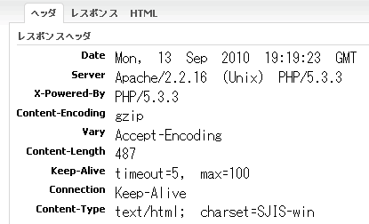

戻る
最終更新日: 2010 年 9 月 14 日
携帯端末への対応
PC と携帯、両方に対応するサイトを作る場合、ネックとなるのが文字コードの問題です。delta 自体はUTF-8 で書かれており、デフォルトの出力形式も UTF-8 を採用しています。しかし、携帯端末の中には UTF-8 の出力に対応していないキャリア (または機種) も存在するため、特定のキャリア用に出力形式を変更する必要が出てきます。ここでは、デフォルトのエンコーディングに UTF-8 を採用しつつ、特定のユーザエージェントのみ出力形式を変更する方法を解説します。
このページにおける携帯端末は日本国内のキャリア DoCoMo、au、Softbank を指します。左記 3 キャリアは許可されたエンコーディング形式が Shift_JIS のみという前提で解説を進めます。(一部機種は UTF-8 の出力にも対応していますが、全機種の対応を考えるのであれば Shift_JIS を使うのが安全です)
初めに application.yml の設定を確認してみて下さい。"default.charset" には "UTF-8" という値が設定されている筈です。ここで設定されている形式は、クライアントからの入力、出力、及び内部エンコーディング (マルチバイト文字の変換等に使用されるエンコーディング) に適用されます。
- YAML Code# config/application.yml
default:
charset: UTF-8 # デフォルトエンコーディング形式に UTF-8 を使用
通常は一貫したエンコーディング形式が望ましいため UTF-8で問題ありませんが、今回は携帯端末からのリクエスト、及びレスポンスは Shift_JIS に変換して処理する必要があります。クライアントがリクエストを送信してからレスポンスが返されるまでのエンコーディングの変換フローについては下表を参照して下さい。
| 状態 | エンコーディングタイプ | エンコーディング形式 | |
|---|---|---|---|
| 1 | 携帯端末でフォームを表示する | 出力エンコーディング | Shift_JIS |
| 2 | フォームから文字列「こんにちは」を送信 | 入力エンコーディング | Shift_JIS |
| 3 | delta がリクエストを解析 | 入力エンコーディングを内部エンコーディングに変換 | Shift_JIS から UTF-8 に変換 |
| 4 | アクションを実行 (応答メッセージ「初めまして」をテンプレートに出力) | 内部エンコーディング | UTF-8 |
| 5 | delta は応答データをクライアントに返却 | 内部エンコーディングを出力エンコーディングに変換 | UTF-8 から Shift_JIS に変換 |
| 6 | 携帯端末に「初めまして」の文字列が表示される | 出力エンコーディング | Shift_JIS |
何だかとても厄介なことをしてるように見えますが、ポイントとなるのは 3 のリクエスト解析と 5 の応答データを返却する部分です。要はロジックが実行されるよりも前に入力エンコーディングを内部エンコーディング (UTF-8) に変換し、出力が行われる直前に内部エンコーディング形式のデータを出力形式に変換すれば良いのです。delta には元々 3 と 5 の処理を行う機構が備わっているので、後は変換元 (先) のエンコーディング形式を指定する処理を加えれば問題は解決します。
エンコーディングの指定はロジックが実行されるよりも前に設定しておくべきなので、ここではフィルタを使って処理してみましょう。libs/filter の下に次のようなフィルタを作成して下さい。
- PHP Code# libs/filter/MobileEncodingFilter.php
class MobileEncodingFilter extends Delta_Filter
{
public function doFilter($chain)
{
// 入力・出力エンコーディング形式の変更
$this->getRequest()->setInputEncoding('Shift_JIS');
$this->getResponse()->setOutputEncoding('Shift_JIS');
$chain->filterChain();
}
}
内容は至ってシンプルです。setInputEncoding() メソッドで入力エンコーディングを設定し、setOutputEncoding() メソッドで出力エンコーディングを設定します。
絵文字の使用が想定される場合は "Shift_JIS" ではなく "SJIS-win" (cp932) を指定して下さい。"Shift_JIS" では絵文字の変換が失敗し、文字化けを起こします。
最後に対象とするモジュールでフィルタを有効化しておきましょう。
- YAML Code# modules/{module}/config/filter.yml
mobileEncodingFilter:
class: MobileEncodingFilter
enable: TRUE
以上で設定は完了です。
出力エンコーディングが変更されたか確認する
それでは実際にエンコーディングの変更が有効になったか確認するためのアクションを作成してみましょう。
- PHP Code# modules/{module}/actions/SjisOutputAction.php
public function execute()
{
$this->getView()->setAttribute('text', 'UTF-8 で書かれています。');
return Delta_View::SUCCESS;
}
SjisOutputAction のエンコーディング形式は従来通り UTF-8 のままで問題ありません。
次に実際の出力を行なうテンプレートを作成します。
- Template Code# modules/{module}/templates/sjis_output.php
<!DOCTYPE HTML PUBLIC "-//W3C//DTD HTML 4.0 Transitional//EN">
<html lang="ja" dir="ltr">
<head>
<meta http-equiv="Content-Language" content="ja">
<meta http-equiv="Content-Type" content="text/html; charset=Shift_JIS">
<title>SjisOutput</title>
</head>
<body>
<h1><?php echo $text ?></h1>
</body>
</html>
テンプレートファイルは Shift_JIS ではなく UTF-8 で記述する点に注意して下さい。
最後に携帯端末から SjisOutputAction にアクセスしてみましょう。文字化けせず「UTF-8 で書かれています。」と出力されていれば変換が成功しています。
下図は SjisOutput アクションを実行した際の HTTP レスポンスヘッダです。"Content-Type" の欄が "text/html; charset=SJIS-win" となっており、正しく Shift_JIS (SJIS-win) で出力されていることが分かります。
